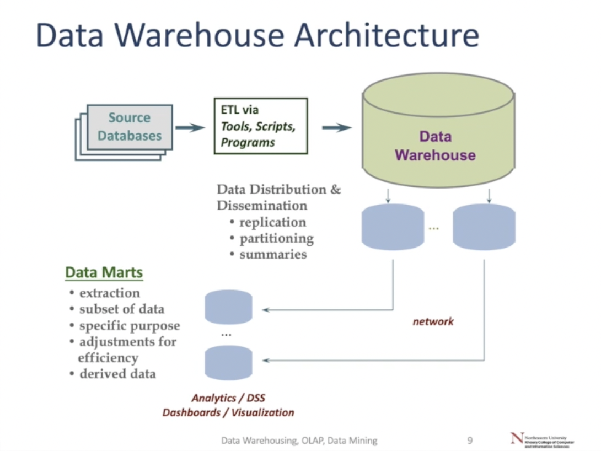

Organizations have large databases from collecting data on day-to-day activities, ranging from GB to TBs of data.
Subject-oriented, integrated, time-variant, non-volatile collection of data in support of management’s decisions - Bill Inmon
Data Warehouses are databases consolidating data from multiple sources, augmented with summary info and historical data over time.
Data Mart: Subject-specific subsets of data geared towards the needs of a particular user.
A data warehouse is organized around a major subject, eg. accounts, products, or orders.
Unlike an operational database which supports an application, the data is organized according to its subject.
They change the perspective of the data to better enable analysis!

ETL - Various source databases extracted and transformed into required data formats for warehouse and then uploaded.
Data warehouse can be queried directly, but usually subset into data marts
Usually very large and often spread across multiple databases, where summary data is stored alongside individual values.
DSS: Decision support systems, extracts high-level information in databases and uses that information to support decisions. Data warehousing, OLAP, data mining, and predictive modeling are all tools and techniques to build DSS.
| OLTP | OLAP |
|---|---|
| Used online by users for specific, defined reasons | Used by managers/execs for unknown tasks |
| Contains current data | Contains data snapshots |
| Contains unfiltered data | Contains filtered, converted data |
| Single data source | Multiple data sources |
| Continuous updates | periodic, versioned updates |
Data warehouses are only updated periodically - eg. weekly or monthly.
Integrating data across multiple sources creates a host of issues:
Backflushing: after cleaning data via ETL data quality issues are often resolved and copied back to operational data sources.